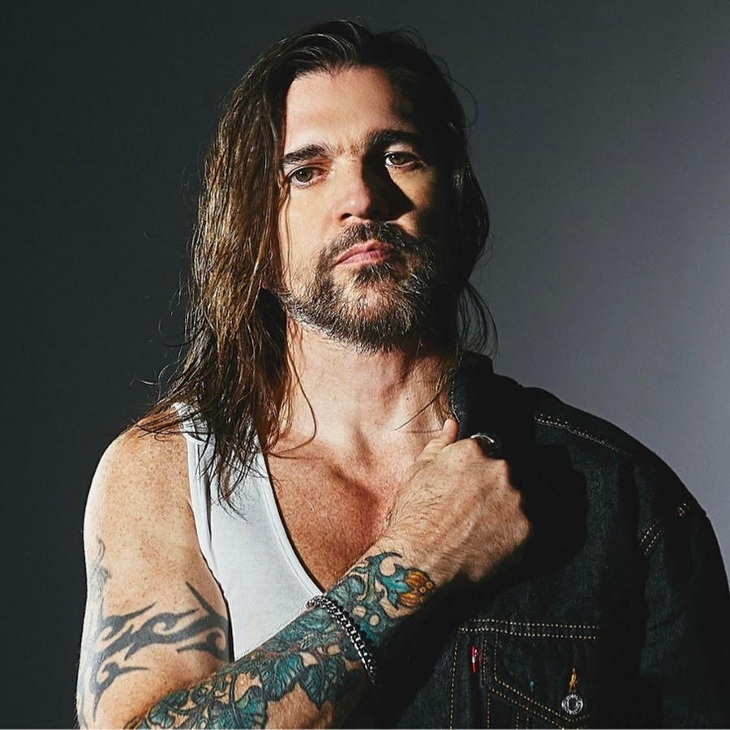

|  | BibliografíaJuan Esteban Aristizábal Vásquez nació el 9 de agosto de 1972 en la Clínica El Rosario de Medellín, hijo de Javier Aristizábal y Alicia Vásquez. Vivió su infancia entre Medellín y carolina del príncipe un municipio también del departamento de Antioquia, Colombia. Sus cinco hermanos mayores fueron los que le enseñaron a tocar la flauta y la guitarra, instrumento que lo ha acompañado toda su vida musical. |